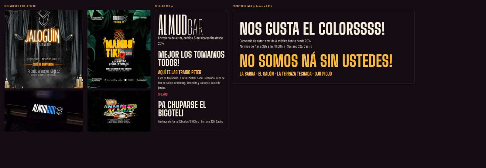
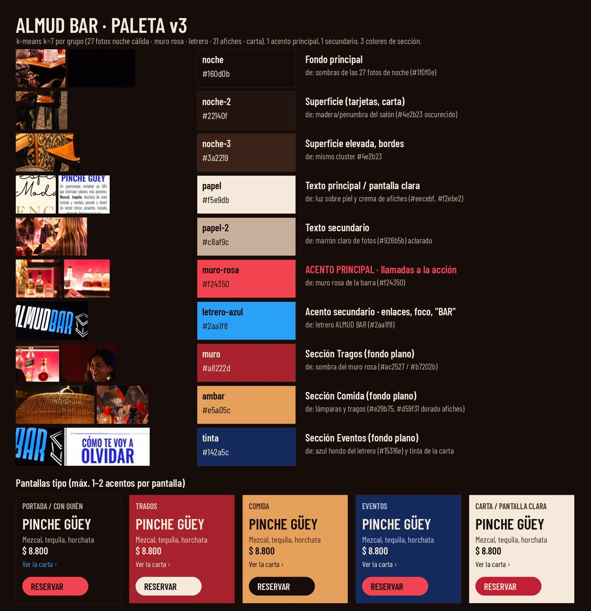
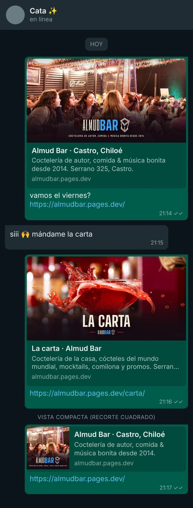
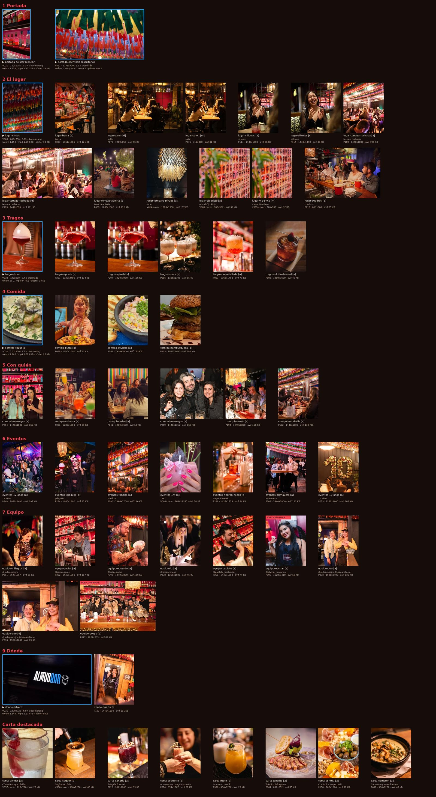

Almud v3 · avance
Vista interna de trabajo (no es la página final). Se actualiza en cada fase.
Fase 3 · Tipografía
Big Shoulders en títulos (familia del BAR de su logo), Barlow Condensed en textos, comparadas con sus afiches y su letrero.

Fase 4 · Paleta
Sacada de sus fotos, el muro rosa, el letrero y sus afiches. Aprobada con cambios por Carmen Paz.

Fase 5 · Al compartir por WhatsApp

Fase 7 · Fotos y videos elegidos por sección
Los marcados con ▶ son videos que se reproducen solos.

Fase 8 · Boceto real
En construcción: estará en almudbar.pages.dev/v3/